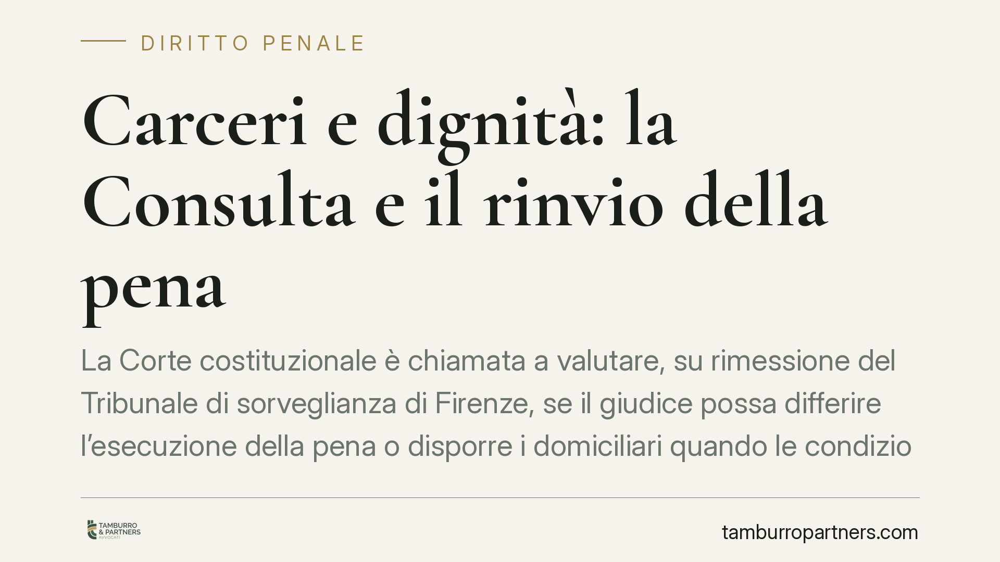

Carceri e dignità: la Consulta e il rinvio della pena
La Corte costituzionale è chiamata a valutare, su rimessione del Tribunale di sorveglianza di Firenze, se il giudice possa differire l'esecuzione della pena o disporre i domiciliari quando le condizioni carcerarie ledono la dignità della persona. In gioco l'art. 147 cod. pen. e la sua compatibilità con l'art. 27 Cost. e l'art. 3 CEDU.

Il fatto
Il Tribunale di sorveglianza di Firenze ha sollevato questione di legittimità costituzionale sull'art. 147 del codice penale, nella parte in cui non prevede il rinvio dell'esecuzione della pena quando la detenzione si svolga in condizioni contrarie al senso di umanità. La vicenda trae origine dalla posizione di un detenuto ristretto in un istituto penitenziario toscano in condizioni asseritamente degradanti.
*Nota di verifica: gli estremi dell'ordinanza di rimessione, l'identità dell'istituto e la data di trattazione dinanzi alla Corte vanno riscontrati sulle fonti ufficiali (Gazzetta Ufficiale e sito della Corte costituzionale). Il presente contributo tratta la questione sul piano giuridico generale.*
Alla Corte si sono rivolti, a vario titolo, l'Unione delle Camere penali italiane e l'associazione Antigone, oltre all'Avvocatura dello Stato in rappresentanza del Governo.
Inquadramento normativo
L'art. 147 cod. pen. disciplina il rinvio facoltativo dell'esecuzione della pena. Il comma 1 contempla tre ipotesi: la presentazione di domanda di grazia; le condizioni di grave infermità fisica del condannato; il caso della madre di prole di età inferiore a un anno. Fuori da queste ipotesi il giudice non dispone, oggi, di uno strumento diretto per intervenire.
Va distinta questa norma dall'art. 148 cod. pen., che riguarda l'infermità psichica sopravvenuta: si tratta di previsione autonoma, con presupposti e conseguenze proprie, da non confondere con il rinvio dell'art. 147.
Il parametro costituzionale principale è l'art. 27, comma 3, Cost., secondo cui le pene non possono consistere in trattamenti contrari al senso di umanità. A questo si aggiunge l'art. 3 CEDU (divieto di trattamenti inumani o degradanti), che opera nel giudizio interno come parametro interposto ex art. 117, comma 1, Cost.: la CEDU non modifica direttamente la Costituzione, ma la sua violazione integra un contrasto con l'art. 117, che impone il rispetto degli obblighi internazionali.
Su questo terreno pesa la sentenza Torreggiani c. Italia della Corte EDU (2013), che condannò l'Italia per il sovraffollamento carcerario e impose l'introduzione di rimedi effettivi.
Il rimedio già esistente e il suo limite
In risposta a Torreggiani il legislatore ha introdotto l'art. 35-ter dell'ordinamento penitenziario (L. 354/1975), inserito dal D.L. 92/2014, convertito con L. 117/2014. Si tratta di un rimedio risarcitorio: a chi ha subìto detenzione in condizioni inumane spetta una riduzione della pena pari a un giorno ogni dieci di pregiudizio subìto, oppure — quando la riduzione non è applicabile — un risarcimento monetario di 8 euro per ciascun giorno.
Il punto sollevato dal giudice fiorentino è che questo strumento compensa a posteriori un pregiudizio già patito, ma non impedisce che la detenzione degradante prosegua. Manca, cioè, un rimedio diretto capace di sospendere o modificare l'esecuzione della pena finché durano le condizioni lesive.
Cosa chiede la Consulta
La questione mira a una pronuncia additiva: si chiede alla Corte non di cancellare una norma, ma di aggiungervi un contenuto oggi assente, dichiarandola illegittima "nella parte in cui non prevede" un ulteriore caso di rinvio. In pratica, il giudice di sorveglianza potrebbe differire la pena o disporre la detenzione domiciliare quando l'ambiente carcerario violi la dignità della persona.
È una scelta di sistema delicata: bilanciare l'effettività della pena con il divieto costituzionale di trattamenti inumani.
Implicazioni pratiche
Per il condannato e per il difensore, un eventuale accoglimento aprirebbe uno strumento nuovo, alternativo al solo risarcimento. Anche in caso di rigetto, la pronuncia orienterà l'interpretazione dell'art. 147 e dei rimedi collegati.
Per gli istituti penitenziari, la decisione inciderebbe sulla gestione del sovraffollamento, spostando parte del contenzioso dalla fase risarcitoria a quella dell'esecuzione.
Cosa fare in concreto
- Documentare con precisione le condizioni detentive: spazio individuale disponibile, ore fuori dalla cella, condizioni igieniche e sanitarie.
- Verificare la sussistenza dei presupposti dell'art. 35-ter ord. pen. e valutarne l'attivazione tempestiva.
- Monitorare l'esito della questione di costituzionalità e gli estremi ufficiali dell'ordinanza di rimessione prima di fondarvi istanze.
- Formulare istanze al magistrato o al tribunale di sorveglianza motivate sul parametro dell'art. 27 Cost. e dell'art. 3 CEDU.
- È opportuna un'analisi caso per caso, poiché la valutazione dipende dalle condizioni concrete di ciascun istituto.
La pronuncia, quando depositata, andrà letta nelle motivazioni per coglierne la reale portata operativa.
---
*Contributo informativo a cura di Tamburro & Partners - Avv. Giuseppe Tamburro. Non costituisce parere legale.*
Ogni condominio ha una storia a sé.
Se gestisci un'amministrazione e vuoi un confronto su una specifica questione condominiale, scrivi allo studio. Ti rispondiamo entro un giorno lavorativo.